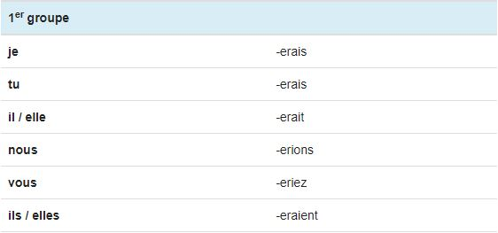
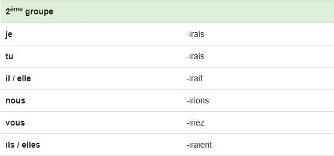
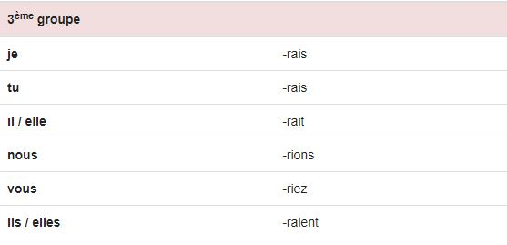
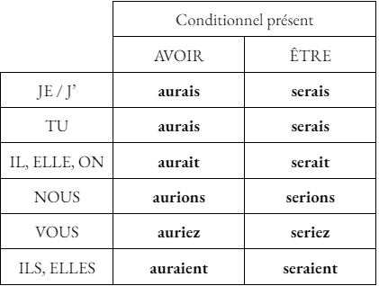
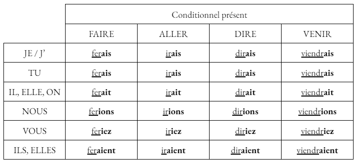
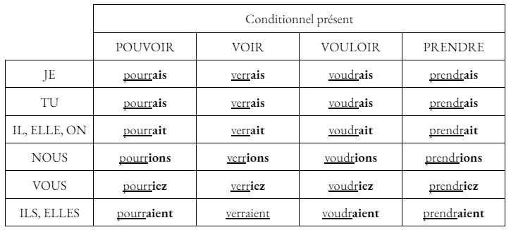

Le Conditionnel présent
Utilisation
Le conditionnel présent est un temps employé pour exprimer une hypothèse ou un souhait.
Exemples :
- "Je voudrais un chien pour mon anniversaire." : souhait.
- "La cause de cet accident pourrait venir des pneus de la voiture." : hypothèse.
Terminaisons
Pour conjuguer un verbe au conditionnel présent, on utilise le radical du futur et les terminaisons de l'imparfait : -ais, -ais, -ait, -ions, -iez, -aient.
Voici, plus précisement, les terminaisons selon les groupes :
- Verbes du 1er groupe : 
- Verbes du 2ème groupe : 
- Verbes du 3ème groupe : 
Auxiliaires
Voici la conjugaison des auxiliaires avoir et être au conditionnel présent :

Remarques
Les verbes des 1er et 2ème groupes conservent généralement l'infinitif en entier: "chanter => je chanterais", "finir => je finirais".
Les verbes du 3ème groupe conservent parfois leur radical mais beaucoup sont irréguliers : "vouloir => je voudrais", "pouvoir = je pourrais".
Conjugaison des verbes faire, aller, dire, venir, pouvoir, voir, vouloir et prendre
Voici la conjugaison des verbes faire, aller, dire, venir, pouvoir, voir, vouloir et prendre à l'impératif présent :
 
Auxiliaires
Voici la conjugaison des deux auxiliaires avoir et être au conditionnel présent de l'indicatif.


Premiers exercices
Exercices à faire au maximum sans l'aide de la leçon.
Conjuguez le verbe attendu, à la personne attendue, au conditionnel présent. Ne pas écrire le pronom, ne pas mettre de majuscule ni d'espace !
Si tu as réussi pour ces verbes là, je te conseille de cliquer ici pour t'entraîner sur des verbes et des pronoms aléatoires: Exercice final du conditionnel